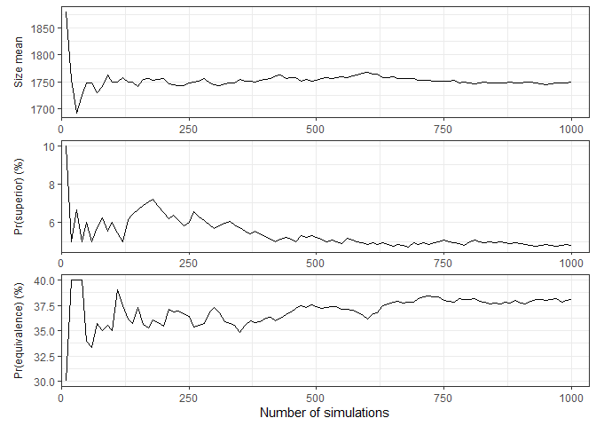
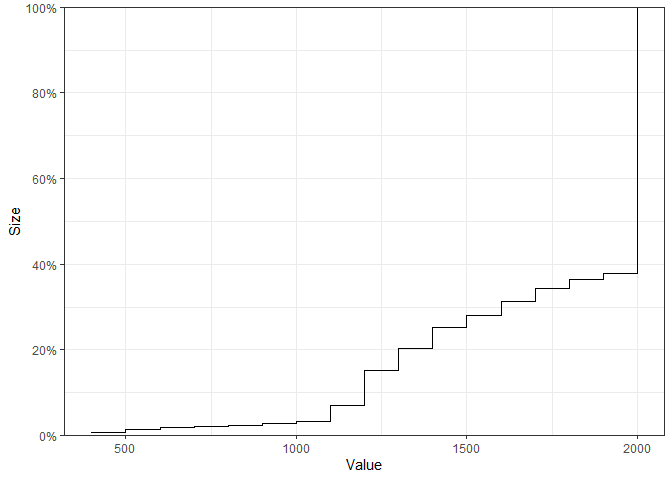
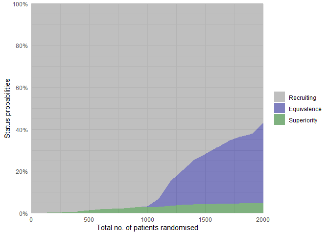
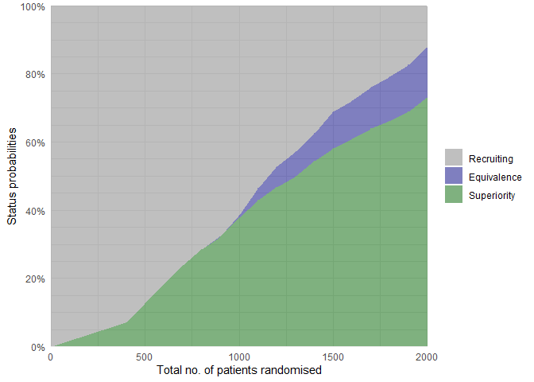

The adaptr package simulates adaptive (multi-arm, multi-stage) clinical trials using adaptive stopping, adaptive arm dropping and/or response-adaptive randomisation.
The package has been developed as part of the INCEPT (Intensive Care Platform Trial) project, primarily supported by a grant from Sygeforsikringen “danmark”.
Resources
- Website - stand-alone website with full package documentation
- adaptr: an R package for simulating and comparing adaptive clinical trials - article in the Journal of Open Source Software describing the package
- An overview of methodological considerations regarding adaptive stopping, arm dropping and randomisation in clinical trials - article in Journal of Clinical Epidemiology describing key methodological considerations in adaptive trials with description of the workflow and a simulation-based example using the package
Examples:
-
Effects of duration of follow-up and lag in data collection on the performance of adaptive clinical trials - article in Pharmaceutical Statistics describing a simulation study (with code) using
adaptrto assess the performance of adaptive clinical trials according to different follow-up/data collection lags. -
Effects of sceptical priors on the performance of adaptive clinical trials with binary outcomes - article in Pharmaceutical Statistics describing a simulation study (with code) using
adaptrto assess the performance of adaptive clinical trials according to different sceptical priors.
Installation
The easiest way is to install from CRAN directly:
install.packages("adaptr")Alternatively, you can install the development version from GitHub - this requires the remotes-package installed. The development version may contain additional features not yet available in the CRAN version, but may not be stable or fully documented:
# install.packages("remotes")
remotes::install_github("INCEPTdk/adaptr@dev")Usage and workflow overview
The central functionality of adaptr and the typical workflow is illustrated here.
Setup
First, the package is loaded and a cluster of parallel workers is initiated by the setup_cluster() function to facilitate parallel computing:
library(adaptr)
#> Loading 'adaptr' package v1.4.0.
#> For instructions, type 'help("adaptr")'
#> or see https://inceptdk.github.io/adaptr/.
setup_cluster(2)Specify trial design
Setup a trial specification (defining the trial design and scenario) using the general setup_trial() function, or one of the special case variants using default priors setup_trial_binom() (for binary, binomially distributed outcomes; used in this example) or setup_trial_norm() (for continuous, normally distributed outcomes).
# Setup a trial using a binary, binomially distributed, undesirable outcome
binom_trial <- setup_trial_binom(
arms = c("Arm A", "Arm B", "Arm C"),
# Scenario with identical outcomes in all arms
true_ys = c(0.25, 0.25, 0.25),
# Response-adaptive randomisation with minimum 20% allocation in all arms
min_probs = rep(0.20, 3),
# Number of patients with data available at each analysis
data_looks = seq(from = 300, to = 2000, by = 100),
# Number of patients randomised at each analysis (higher than the numbers
# with data, except at last look, due to follow-up/data collection lag)
randomised_at_looks = c(seq(from = 400, to = 2000, by = 100), 2000),
# Stopping rules for inferiority/superiority not explicitly defined
# Stop for equivalence at > 90% probability of differences < 5 %-points
equivalence_prob = 0.9,
equivalence_diff = 0.05
)
# Print trial specification
print(binom_trial, prob_digits = 3)
#> Trial specification: generic binomially distributed outcome trial
#> * Undesirable outcome
#> * No common control arm
#> * Best arms: Arm A and Arm B and Arm C
#>
#> Arms, true outcomes, starting allocation probabilities
#> and allocation probability limits:
#> arms true_ys start_probs fixed_probs min_probs max_probs
#> Arm A 0.25 0.333 NA 0.2 NA
#> Arm B 0.25 0.333 NA 0.2 NA
#> Arm C 0.25 0.333 NA 0.2 NA
#>
#> Maximum sample size: 2000
#> Maximum number of data looks: 18
#> Planned data looks after: 300, 400, 500, 600, 700, 800, 900, 1000, 1100, 1200, 1300, 1400, 1500, 1600, 1700, 1800, 1900, 2000 patients have reached follow-up
#> Number of patients randomised at each look: 400, 500, 600, 700, 800, 900, 1000, 1100, 1200, 1300, 1400, 1500, 1600, 1700, 1800, 1900, 2000, 2000
#>
#> Superiority threshold: 0.99 (all analyses)
#> Inferiority threshold: 0.01 (all analyses)
#> Equivalence threshold: 0.9 (all analyses) (no common control)
#> Absolute equivalence difference: 0.05
#> No futility threshold (not relevant - no common control)
#> Soften power for all analyses: 1 (no softening)Calibration
In the example trial specification, there are no true between-arm differences, and stopping rules for inferiority and superiority are not explicitly defined. This is intentional, as these stopping rules will be calibrated to obtain a desired probability of stopping for superiority in the scenario with no between-arm differences (corresponding to the Bayesian type 1 error rate). Trial specifications do not necessarily have to be calibrated, and simulations can be run directly using the run_trials() function covered below (or run_trial() for a single simulation).
Calibration of a trial specification is done using the calibrate_trial() function, which defaults to calibrate constant, symmetrical stopping rules for inferiority and superiority (expecting a trial specification with identical outcomes in each arm), but can be used to calibrate any parameter in a trial specification towards any performance metric.
# Calibrate the trial specification
calibrated_binom_trial <- calibrate_trial(
trial_spec = binom_trial,
n_rep = 1000, # 1000 simulations for each step (more generally recommended)
base_seed = 4131, # Base random seed (for reproducible results)
target = 0.05, # Target value for calibrated metric (default value)
search_range = c(0.9, 1), # Search range for superiority stopping threshold
tol = 0.01, # Tolerance range
dir = -1 # Tolerance range only applies below target
)
# Print result (to check if calibration is successful)
calibrated_binom_trial
#> Trial calibration:
#> * Result: calibration successful
#> * Best x: 0.9814318
#> * Best y: 0.048
#>
#> Central settings:
#> * Target: 0.05
#> * Tolerance: 0.01 (at or below target, range: 0.04 to 0.05)
#> * Search range: 0.9 to 1
#> * Gaussian process controls:
#> * - resolution: 5000
#> * - kappa: 0.5
#> * - pow: 1.95
#> * - lengthscale: 1 (constant)
#> * - x scaled: yes
#> * Noisy: no
#> * Narrowing: yes
#>
#> Calibration/simulation details:
#> * Total evaluations: 7 (previous + grid + iterations)
#> * Repetitions: 1000
#> * Calibration time: 3.66 mins
#> * Base random seed: 4131
#>
#> See 'help("calibrate_trial")' for details.The calibration is successful - the calibrated, constant stopping threshold for superiority is printed with the results (0.9814318) and can be extracted using calibrated_binom_trial$best_x. Using the default calibration functionality, the calibrated, constant stopping threshold for inferiority is symmetrical, i.e., 1 - stopping threshold for superiority (0.0185682). The calibrated trial specification may be extracted using calibrated_binom_trial$best_trial_spec and, if printed, will also include the calibrated stopping thresholds.
Calibration results may be saved (and reloaded) by using the path argument, to avoid unnecessary repeated simulations.
Summarising results
The results of the simulations using the calibrated trial specification conducted during the calibration procedure may be extracted using calibrated_binom_trial$best_sims. These results can be summarised with several functions. Most of these functions support different ‘selection strategies’ for simulations not ending with superiority, i.e., performance metrics can be calculated assuming different arms would be used in clinical practice if no arm is ultimately superior.
The check_performance() function summarises performance metrics in a tidy data.frame, with uncertainty measures (bootstrapped confidence intervals) if requested. Here, performance metrics are calculated considering the ‘best’ arm (i.e., the one with the highest probability of being overall best) selected in simulations not ending with superiority:
# Calculate performance metrics with uncertainty measures
binom_trial_performance <- check_performance(
calibrated_binom_trial$best_sims,
select_strategy = "best",
uncertainty = TRUE, # Calculate uncertainty measures
n_boot = 1000, # 1000 bootstrap samples (more typically recommended)
ci_width = 0.95, # 95% confidence intervals (default)
boot_seed = "base" # Use same random seed for bootstrapping as for simulations
)
# Print results
print(binom_trial_performance, digits = 2)
#> metric est err_sd err_mad lo_ci hi_ci
#> 1 n_summarised 1000.00 0.00 0.00 1000.00 1000.00
#> 2 size_mean 1749.60 11.36 10.97 1727.20 1772.10
#> 3 size_sd 373.74 9.64 9.74 355.15 392.58
#> 4 size_median 2000.00 0.00 0.00 2000.00 2000.00
#> 5 size_p25 1400.00 52.43 0.00 1400.00 1500.00
#> 6 size_p75 2000.00 0.00 0.00 2000.00 2000.00
#> 7 size_p0 400.00 NA NA NA NA
#> 8 size_p100 2000.00 NA NA NA NA
#> 9 sum_ys_mean 438.69 2.95 2.85 432.74 444.66
#> 10 sum_ys_sd 96.20 2.42 2.37 91.28 100.79
#> 11 sum_ys_median 486.00 1.98 2.97 483.00 490.00
#> 12 sum_ys_p25 364.75 10.95 9.64 352.00 395.00
#> 13 sum_ys_p75 506.00 1.15 1.48 504.00 508.00
#> 14 sum_ys_p0 88.00 NA NA NA NA
#> 15 sum_ys_p100 565.00 NA NA NA NA
#> 16 ratio_ys_mean 0.25 0.00 0.00 0.25 0.25
#> 17 ratio_ys_sd 0.01 0.00 0.00 0.01 0.01
#> 18 ratio_ys_median 0.25 0.00 0.00 0.25 0.25
#> 19 ratio_ys_p25 0.24 0.00 0.00 0.24 0.24
#> 20 ratio_ys_p75 0.26 0.00 0.00 0.26 0.26
#> 21 ratio_ys_p0 0.20 NA NA NA NA
#> 22 ratio_ys_p100 0.30 NA NA NA NA
#> 23 prob_conclusive 0.43 0.02 0.01 0.40 0.46
#> 24 prob_superior 0.05 0.01 0.01 0.04 0.06
#> 25 prob_equivalence 0.38 0.02 0.01 0.35 0.41
#> 26 prob_futility 0.00 0.00 0.00 0.00 0.00
#> 27 prob_max 0.57 0.02 0.01 0.54 0.60
#> 28 prob_select_arm_Arm A 0.32 0.02 0.01 0.29 0.35
#> 29 prob_select_arm_Arm B 0.31 0.01 0.01 0.28 0.34
#> 30 prob_select_arm_Arm C 0.37 0.02 0.02 0.34 0.40
#> 31 prob_select_none 0.00 0.00 0.00 0.00 0.00
#> 32 rmse 0.02 0.00 0.00 0.02 0.02
#> 33 rmse_te NA NA NA NA NA
#> 34 mae 0.01 0.00 0.00 0.01 0.01
#> 35 mae_te NA NA NA NA NA
#> 36 idp NA NA NA NA NASimilar results in list format (without uncertainty measures) can be obtained using the summary() method, which comes with a print() method providing formatted results:
binom_trial_summary <- summary(
calibrated_binom_trial$best_sims,
select_strategy = "best"
)
print(binom_trial_summary)
#> Multiple simulation results: generic binomially distributed outcome trial
#> * Undesirable outcome
#> * Number of simulations: 1000
#> * Number of simulations summarised: 1000 (all trials)
#> * No common control arm
#> * Selection strategy: best remaining available
#> * Treatment effect compared to: no comparison
#>
#> Performance metrics (using posterior estimates from final analysis [all patients]):
#> * Sample sizes: mean 1749.6 (SD: 373.7) | median 2000.0 (IQR: 1400.0 to 2000.0) [range: 400.0 to 2000.0]
#> * Total summarised outcomes: mean 438.7 (SD: 96.2) | median 486.0 (IQR: 364.8 to 506.0) [range: 88.0 to 565.0]
#> * Total summarised outcome rates: mean 0.251 (SD: 0.011) | median 0.250 (IQR: 0.244 to 0.258) [range: 0.198 to 0.295]
#> * Conclusive: 42.9%
#> * Superiority: 4.8%
#> * Equivalence: 38.1%
#> * Futility: 0.0% [not assessed]
#> * Inconclusive at max sample size: 57.1%
#> * Selection probabilities: Arm A: 31.8% | Arm B: 31.0% | Arm C: 37.2% | None: 0.0%
#> * RMSE / MAE: 0.01730 / 0.01102
#> * RMSE / MAE treatment effect: not estimated / not estimated
#> * Ideal design percentage: not estimable
#>
#> Simulation details:
#> * Simulation time: 33.1 secs
#> * Base random seed: 4131
#> * Credible interval width: 95%
#> * Number of posterior draws: 5000
#> * Estimation method: posterior medians with MAD-SDsIndividual simulation results may be extracted in a tidy data.frame using extract_results().
Finally, the probabilities of different remaining arms and their statuses (with uncertainty) at the last adaptive analysis can be summarised using the check_remaining_arms() function.
Visualising results
Several visualisation functions are included (all are optional, and all require the ggplot2 package installed).
Convergence and stability of one or more performance metrics may be visually assessed using plot_convergence() function:
plot_convergence(
calibrated_binom_trial$best_sims,
metrics = c("size mean", "prob_superior", "prob_equivalence"),
# select_strategy can be specified, but does not affect the chosen metrics
)
The empirical cumulative distribution functions for continuous performance metrics may also be visualised:
plot_metrics_ecdf(
calibrated_binom_trial$best_sims,
metrics = "size"
)
The status probabilities for the overall trial (or for specific arms) according to trial progress can be visualised using the plot_status() function:
# Overall trial status probabilities
plot_status(
calibrated_binom_trial$best_sims,
x_value = "total n" # Total number of randomised patients at X-axis
)
Finally, various metrics may be summarised over the progress of one or multiple trial simulations using the plot_history() function, which requires non-sparse results (the sparse argument must be FALSE in calibrate_trials(), run_trials(), or run_trial(), leading to additional results being saved).
Use calibrated stopping thresholds in another scenario
The calibrated stopping thresholds (calibrated in a scenario with no between-arm differences) may be used to run simulations with the same overall trial specification, but according to a different scenario (i.e., with between-arm differences present) to assess performance metrics (including the Bayesian analogue of power).
First, a new trial specification is setup using the same settings as before, except for between-arm differences and the calibrated stopping thresholds:
binom_trial_calib_diff <- setup_trial_binom(
arms = c("Arm A", "Arm B", "Arm C"),
true_ys = c(0.25, 0.20, 0.30), # Different outcomes in the arms
min_probs = rep(0.20, 3),
data_looks = seq(from = 300, to = 2000, by = 100),
randomised_at_looks = c(seq(from = 400, to = 2000, by = 100), 2000),
# Stopping rules for inferiority/superiority explicitly defined
# using the calibration results
inferiority = 1 - calibrated_binom_trial$best_x,
superiority = calibrated_binom_trial$best_x,
equivalence_prob = 0.9,
equivalence_diff = 0.05
)Simulations using the trial specification with calibrated stopping thresholds and differences present can then be conducted using the run_trials() function and performance metrics calculated as above:
binom_trial_diff_sims <- run_trials(
binom_trial_calib_diff,
n_rep = 1000, # 1000 simulations (more generally recommended)
base_seed = 1234 # Reproducible results
)
check_performance(
binom_trial_diff_sims,
select_strategy = "best",
uncertainty = TRUE,
n_boot = 1000, # 1000 bootstrap samples (more typically recommended)
ci_width = 0.95,
boot_seed = "base"
)
#> metric est err_sd err_mad lo_ci hi_ci
#> 1 n_summarised 1000.000 0.000 0.000 1000.000 1000.000
#> 2 size_mean 1242.300 16.620 16.976 1209.895 1273.025
#> 3 size_sd 531.190 7.251 7.604 516.617 544.091
#> 4 size_median 1200.000 22.220 0.000 1200.000 1300.000
#> 5 size_p25 800.000 36.095 0.000 700.000 800.000
#> 6 size_p75 1700.000 42.453 0.000 1700.000 1800.000
#> 7 size_p0 400.000 NA NA NA NA
#> 8 size_p100 2000.000 NA NA NA NA
#> 9 sum_ys_mean 284.999 3.695 3.726 277.724 291.991
#> 10 sum_ys_sd 117.265 1.701 1.732 113.765 120.311
#> 11 sum_ys_median 279.000 5.268 4.448 269.500 289.512
#> 12 sum_ys_p25 186.000 6.682 7.413 174.000 197.019
#> 13 sum_ys_p75 390.000 7.633 7.413 374.000 402.250
#> 14 sum_ys_p0 81.000 NA NA NA NA
#> 15 sum_ys_p100 519.000 NA NA NA NA
#> 16 ratio_ys_mean 0.232 0.000 0.001 0.231 0.233
#> 17 ratio_ys_sd 0.016 0.000 0.000 0.015 0.017
#> 18 ratio_ys_median 0.230 0.001 0.000 0.230 0.232
#> 19 ratio_ys_p25 0.221 0.000 0.000 0.220 0.222
#> 20 ratio_ys_p75 0.242 0.001 0.001 0.240 0.243
#> 21 ratio_ys_p0 0.195 NA NA NA NA
#> 22 ratio_ys_p100 0.298 NA NA NA NA
#> 23 prob_conclusive 0.877 0.011 0.010 0.857 0.898
#> 24 prob_superior 0.731 0.014 0.015 0.706 0.759
#> 25 prob_equivalence 0.146 0.011 0.011 0.125 0.167
#> 26 prob_futility 0.000 0.000 0.000 0.000 0.000
#> 27 prob_max 0.123 0.011 0.010 0.102 0.143
#> 28 prob_select_arm_Arm A 0.038 0.006 0.006 0.026 0.049
#> 29 prob_select_arm_Arm B 0.962 0.006 0.006 0.951 0.974
#> 30 prob_select_arm_Arm C 0.000 0.000 0.000 0.000 0.000
#> 31 prob_select_none 0.000 0.000 0.000 0.000 0.000
#> 32 rmse 0.020 0.001 0.001 0.019 0.022
#> 33 rmse_te NA NA NA NA NA
#> 34 mae 0.011 0.000 0.000 0.010 0.012
#> 35 mae_te NA NA NA NA NA
#> 36 idp 98.100 0.306 0.297 97.549 98.700Again, simulations may be saved and reloaded using the path argument.
Similarly, overall trial statuses for the scenario with differences can be visualised:
plot_status(binom_trial_diff_sims, x_value = "total n")
Issues and enhancements
We use the GitHub issue tracker for all bug/issue reports and proposals for enhancements.
Contributing
We welcome contributions directly to the code to improve performance as well as new functionality. For the latter, please first explain and motivate it in an issue.
Changes to the code base should follow these steps:
- Fork the repository
- Make a branch with an appropriate name in your fork
- Implement changes in your fork, make sure it passes R CMD check (with neither errors, warnings, nor notes) and add a bullet at the top of NEWS.md with a short description of the change, your GitHub handle and the id of the pull request implementing the change (check the
NEWS.mdfile to see the formatting) - Create a pull request into the
devbranch ofadaptr
Citation
If you use the package, please consider citing it:
citation(package = "adaptr")
#>
#> To cite package 'adaptr' in publications use:
#>
#> Granholm A, Jensen AKG, Lange T, Kaas-Hansen BS (2022). adaptr: an R
#> package for simulating and comparing adaptive clinical trials.
#> Journal of Open Source Software, 7(72), 4284. URL
#> https://doi.org/10.21105/joss.04284.
#>
#> A BibTeX entry for LaTeX users is
#>
#> @Article{,
#> title = {{adaptr}: an R package for simulating and comparing adaptive clinical trials},
#> author = {Anders Granholm and Aksel Karl Georg Jensen and Theis Lange and Benjamin Skov Kaas-Hansen},
#> journal = {Journal of Open Source Software},
#> year = {2022},
#> volume = {7},
#> number = {72},
#> pages = {4284},
#> url = {https://doi.org/10.21105/joss.04284},
#> doi = {10.21105/joss.04284},
#> }